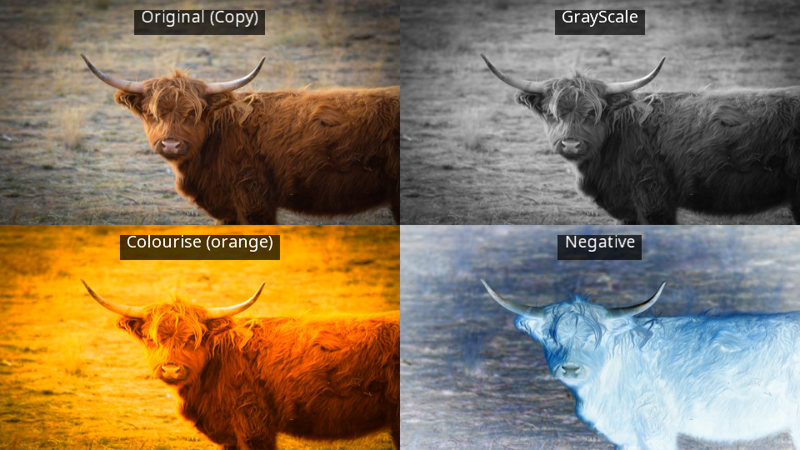
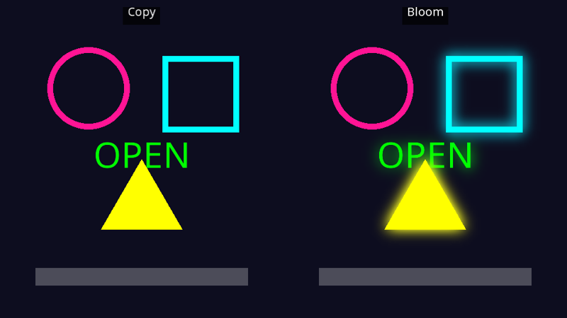
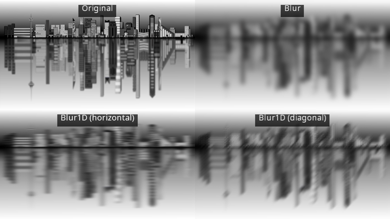
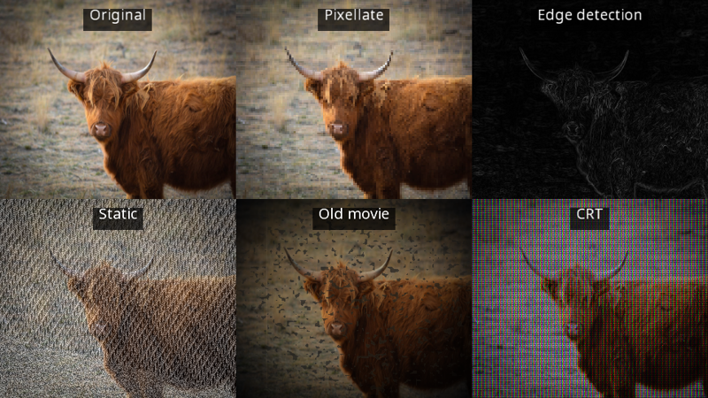
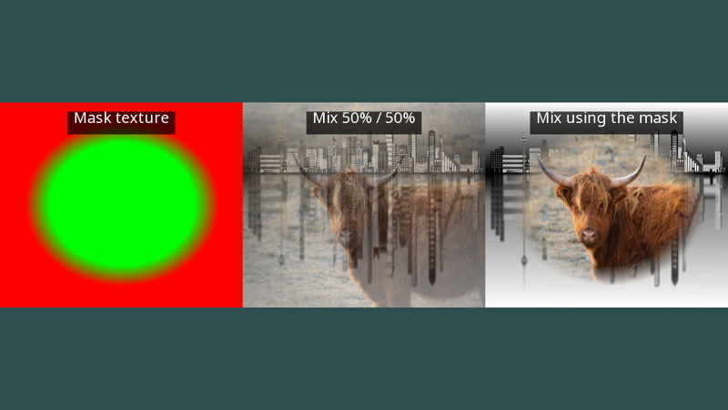

Post-processing effects
yak2D's effect stages read a surface and write a changed version of it to a render target. The source can be a loaded texture, or (more usually) a render target you have just drawn your scene into. See The render queue and render stages for how stages fit together.
Every effect follows the same three steps:
- Create the stage in
CreateResources(). - Configure it (once, or whenever you like, optionally with a smooth transition).
- Use it in the render queue:
q.Effect(stage, source, target).
The examples below show "before and after" side by side using viewports. Their full source is in Effects.cs.
Colour effects

A colour effects stage (IColourEffectsStage) can combine several simple colour changes:
public override bool CreateResources(IServices yak)
{
_yak = yak.Surfaces.LoadTexture("yakphoto", AssetSourceEnum.Embedded);
// A stage has one configuration per frame, so three different looks need three stages
_grey = yak.Stages.CreateColourEffectsStage();
_tint = yak.Stages.CreateColourEffectsStage();
_negative = yak.Stages.CreateColourEffectsStage();
// Start from "no effect" (everything 0, full opacity) and switch on one effect at a time
var none = new ColourEffectConfiguration { Opacity = 1.0f };
var grey = none;
grey.GrayScale = 1.0f;
yak.Stages.SetColourEffectsConfig(_grey, grey);
var tint = none;
tint.Colourise = 1.0f;
tint.ColourForSingleColourAndColourise = Colour.Orange;
yak.Stages.SetColourEffectsConfig(_tint, tint);
var negative = none;
negative.Negative = 1.0f;
yak.Stages.SetColourEffectsConfig(_negative, negative);
CreateQuarters(yak);
return true;
}
public override void Rendering(IRenderQueue q, IRenderTarget windowRenderTarget)
{
// Effects read a texture (any Texture or RenderTarget) and write to a render target. No draw stage needed
q.SetViewport(_quarters[0]);
q.Copy(_yak, windowRenderTarget);
q.SetViewport(_quarters[1]);
q.ColourEffects(_grey, _yak, windowRenderTarget);
q.SetViewport(_quarters[2]);
q.ColourEffects(_tint, _yak, windowRenderTarget);
q.SetViewport(_quarters[3]);
q.ColourEffects(_negative, _yak, windowRenderTarget);
RenderLabels(q, windowRenderTarget);
}
ColourEffectConfiguration settings are applied in this order:
| Setting | Range | Effect |
|---|---|---|
ClearBackground, BackgroundClearColour |
Optionally clear the whole target first. | |
SingleColour |
0 to 1 | Blend towards a flat ColourForSingleColourAndColourise (1 = solid colour). Good for hit flashes. |
GrayScale |
0 to 1 | Blend towards grey (1 = fully grey). |
Colourise |
0 to 1 | Blend towards a version tinted with ColourForSingleColourAndColourise (sepia, night vision...). |
Negative |
0 to 1 | Blend towards the inverted image. |
Opacity |
0 to 1 | Multiply the result's colour and alpha. Set this to 1; a new configuration struct has it at 0, which gives a black result. |
With transitionSeconds, a stage fades smoothly to new settings, which makes fades to black, flashes and "the world goes grey when you die" effects very little code:
public override bool Update(IServices yak, float secondsSinceLastUpdate)
{
if (yak.Input.WasKeyPressedThisFrame(KeyCode.Space))
{
_grey = !_grey;
var target = new ColourEffectConfiguration { Opacity = 1.0f, GrayScale = _grey ? 1.0f : 0.0f };
// The stage blends from its current settings to the new ones over 1.5 seconds
yak.Stages.SetColourEffectsConfig(_colour, target, 1.5f);
}
return base.Update(yak, secondsSinceLastUpdate);
}
Bloom

Bloom makes bright areas glow, like a camera looking at a light. The stage keeps only the pixels brighter than a threshold, blurs them, and adds them back on top of the original:
public override bool CreateResources(IServices yak)
{
_scene = yak.Stages.CreateDrawStage();
_camera = yak.Cameras.CreateCamera2D(480, 540);
_target = yak.Surfaces.CreateRenderTarget(480, 540);
// The bloom works on a smaller copy of the image: smaller is faster and spreads the glow further
_bloom = yak.Stages.CreateBloomStage(120, 135);
yak.Stages.SetBloomConfig(_bloom, new BloomEffectConfiguration
{
BrightnessThreshold = 0.6f, // only pixels brighter than this (luminance, 0 to 1) glow
AdditiveMixAmount = 1.5f, // how strongly the glow is added back on top
NumberOfBlurSamples = 8, // up to 8
ReSamplerType = ResizeSamplerType.Average4x4
});
public override void Rendering(IRenderQueue q, IRenderTarget windowRenderTarget)
{
q.Draw(_scene, _camera, _target);
q.SetViewport(_left);
q.Copy(_target, windowRenderTarget);
q.SetViewport(_right);
q.Bloom(_bloom, _target, windowRenderTarget);
The two numbers passed to CreateBloomStage() are the size of the smaller surface the glow is worked out on. Smaller is faster and spreads the glow further, but is blockier; a quarter of the source size is a good starting point.
| Setting | Effect |
|---|---|
BrightnessThreshold |
Pixels with a luminance (perceived brightness: 0.2126 R + 0.7152 G + 0.0722 B) below this do not glow. |
AdditiveMixAmount |
How strongly the glow is added back. Can be more than 1. |
NumberOfBlurSamples |
Blur quality, 1 to 8. |
ReSamplerType |
How the image is shrunk: NearestNeighbour, Average2x2 or Average4x4 (smoothest). |
Luminance weights green heavily and blue hardly at all. In the picture above, the pink circle's luminance is only about 0.3, below the 0.6 threshold, so it does not glow at all, while the green text, cyan square and yellow triangle do. Choose colours with the threshold in mind: in Yak Run the stars glow but the (slightly greyer) clouds do not.
Blur

Blur blurs in every direction; Blur1D blurs along one direction only, which gives a sense of speed:
public override bool CreateResources(IServices yak)
{
_city = yak.Surfaces.LoadTexture("city", AssetSourceEnum.Embedded);
// As with bloom, the sample surface size trades quality for spread and speed
_blur = yak.Stages.CreateBlurStage(240, 135);
yak.Stages.SetBlurConfig(_blur, new BlurEffectConfiguration
{
MixAmount = 1.0f, // 0 = original image, 1 = fully blurred
NumberOfBlurSamples = 8,
ReSamplerType = ResizeSamplerType.Average4x4
});
// Blur1D only blurs along one direction, e.g. for a sense of speed
_horizontal = yak.Stages.CreateBlur1DStage(240, 135);
yak.Stages.SetBlur1DConfig(_horizontal, new Blur1DEffectConfiguration
{
MixAmount = 1.0f,
NumberOfBlurSamples = 8,
BlurDirection = Vector2.UnitX,
ReSamplerType = ResizeSamplerType.Average4x4
});
_diagonal = yak.Stages.CreateBlur1DStage(240, 135);
yak.Stages.SetBlur1DConfig(_diagonal, new Blur1DEffectConfiguration
{
MixAmount = 1.0f,
NumberOfBlurSamples = 8,
BlurDirection = Vector2.Normalize(new Vector2(1.0f, 1.0f)),
ReSamplerType = ResizeSamplerType.Average4x4
});
| Setting | Effect |
|---|---|
MixAmount |
0 = the original, 1 = fully blurred. Animate it for focus pulls. |
NumberOfBlurSamples |
Blur quality, 1 to 8. |
BlurDirection (Blur1D only) |
The direction to blur along, as a unit vector (e.g. Vector2.UnitX for horizontal). |
ReSamplerType |
As for bloom. |
As with bloom, the sample surface size given when creating the stage controls quality, speed and how far the blur spreads. A blurred copy of the game behind a pause menu is a classic use.
Style effects

A style effects stage (IStyleEffectsStage) contains five retro and stylised effects, applied in this order: pixellate → edge detection → static → old movie → CRT. A new stage has them all switched off. Each has its own configuration method and a PreSet(amount) helper that gives good settings for an amount from 0 to 1:
public override bool CreateResources(IServices yak)
{
_yak = yak.Surfaces.LoadTexture("yakphoto", AssetSourceEnum.Embedded);
_pixellate = yak.Stages.CreateStyleEffectsStage();
_edges = yak.Stages.CreateStyleEffectsStage();
_static = yak.Stages.CreateStyleEffectsStage();
_oldMovie = yak.Stages.CreateStyleEffectsStage();
_crt = yak.Stages.CreateStyleEffectsStage();
// Each effect has a PreSet(amount) helper that gives a sensible configuration for an amount from 0 to 1.
// A new style stage has every effect switched off, so these each switch on just one
yak.Stages.SetStyleEffectsPixellateConfig(_pixellate, PixellateConfiguration.PreSet(0.6f));
yak.Stages.SetStyleEffectsEdgeDetectionConfig(_edges, EdgeDetectionConfiguration.PreSet(1.0f));
yak.Stages.SetStyleEffectsStaticConfig(_static, StaticConfiguration.PreSet(0.5f));
yak.Stages.SetStyleEffectsOldMovieConfig(_oldMovie, OldMovieConfiguration.PreSet(0.8f));
yak.Stages.SetStyleEffectsCrtConfig(_crt, CrtEffectConfiguration.PreSet(1.0f, 320.0f / 270.0f));
| Effect | Configuration | Main settings |
|---|---|---|
| Pixellate | PixellateConfiguration | NumXDivisions, NumYDivisions (how many "big pixels" across and down), Intensity. |
| Edge detection | EdgeDetectionConfiguration | Intensity; IsFreichen chooses the Frei-Chen filter instead of Sobel. |
| Static | StaticConfiguration | Intensity, TimeSpeed (how fast it changes), TexelScaler (size of the noise), IgnoreTransparent. |
| Old movie | OldMovieConfiguration | Scratches, noise, dimming, reel rolls and over-exposure flicker. Start from PreSet() or GenerateDefault(). |
| CRT | CrtEffectConfiguration | Red/green/blue "phosphor" filtering and scanlines. PreSet(amount, aspectRatio). Combine with a CRT-shaped mesh for a curved old monitor. |
SetStyleEffectsGroupConfig() sets all five at once with a StyleEffectGroupConfiguration. The static and old movie effects animate by themselves over time.
Mix

A mix stage (IMixStage) blends up to four surfaces. SetMixStageProperties() takes a Vector4 with the amount of each input (X for input 0, Y for input 1, and so on). An optional mask texture scales those amounts per pixel: its red channel for input 0, green for input 1, blue for input 2 and alpha for input 3.
public override bool CreateResources(IServices yak)
{
_city = yak.Surfaces.LoadTexture("city", AssetSourceEnum.Embedded);
_yak = yak.Surfaces.LoadTexture("yakphoto", AssetSourceEnum.Embedded);
// Half and half of the first two inputs
_even = yak.Stages.CreateMixStage();
yak.Stages.SetMixStageProperties(_even, new Vector4(0.5f, 0.5f, 0.0f, 0.0f));
// Full amounts of each, but scaled per pixel by a mask texture
_masked = yak.Stages.CreateMixStage();
yak.Stages.SetMixStageProperties(_masked, new Vector4(1.0f, 1.0f, 0.0f, 0.0f));
// The mask is generated in code: its R channel is input 0's share of each pixel, G is input 1's.
// Here a circle of yak inside the city
const int size = 128;
var pixels = new Vector4[size * size];
for (var y = 0; y < size; y++)
{
for (var x = 0; x < size; x++)
{
var distance = Vector2.Distance(new Vector2(x, y), new Vector2(size / 2)) / (size / 2);
var yakAmount = Math.Clamp((0.8f - distance) * 5.0f, 0.0f, 1.0f);
pixels[(y * size) + x] = new Vector4(1.0f - yakAmount, yakAmount, 0.0f, 0.0f);
}
}
_mask = yak.Surfaces.CreateRgbaFromData(size, size, pixels);
public override void Rendering(IRenderQueue q, IRenderTarget windowRenderTarget)
{
q.ClearColour(windowRenderTarget, Colour.DarkSlateGray);
q.SetViewport(_thirds[0]);
q.Copy(_mask, windowRenderTarget);
// Up to four inputs. Unused inputs, and the mask when it is not wanted, can be null
q.SetViewport(_thirds[1]);
q.Mix(_even, null, _city, _yak, null, null, windowRenderTarget);
q.SetViewport(_thirds[2]);
q.Mix(_masked, _mask, _city, _yak, null, null, windowRenderTarget);
Uses include cross-fading between scenes, revealing one image through another, and blending day and night versions of a scene.
Copy
Not strictly an effect, but q.Copy(source, target) is the simplest step of all: it stretches any surface onto a render target, with no stage needed.
Performance
Each effect is one or more full-screen passes over its target, so cost grows with the target's size. Blur and bloom do most of their work on the smaller sample surface given when the stage is created, so reducing that size is the quickest way to make them cheaper. Rendering the whole pipeline at a fixed resolution (for example 960 x 540 render targets) and letting the last step stretch it to the window keeps the cost the same on any display.
Note
Known issue: partly transparent shapes drawn onto a render target leave its alpha slightly below 1 there, and the colour effects and distortion stages then show those pixels darker than expected. See Drawing: Blend states.